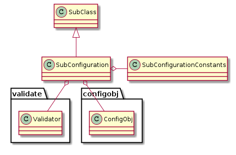
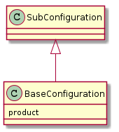

The Base Plugin¶
Background¶
This module contains a BasePlugin class that forms the foundation of the ape plugin-system. Creating a BasePlugin makes it easier to add code as it provides a concrete target for the person adding the code, removes the need for the infrastructure code to be changed when plugins are added, and encourages documentation by providing a built-in online help-interface and auto-included rst files.
In order to create a child of the BasePlugin you are required to implement two properties and one method: sections, product, and fetch_config(). The sections and fetch_config are for the user-interface while the product should be the object to run. The sections can be None if you do not want the online help, but should otherwise be a dictionary with section-names as keys and content-strings as values. It will be passed to the HelpPage so you should see that if you want to know what will be done with the sections property. If the ordering is important use a collections.OrderedDict. The
fetch_config is expected to be a method that sends a sample config-file snippet to stdout. I chose stdout rather than to disk because it allows the user to append it to existing files using redirection >> and it also serves as a prompt for those who just need to remember what the configuration should look like (I also had problems with users accidentally clobbering their configurations by pulling sample files). The product should be the built-object for the code to run (only the __call__ method will be used so that has to be implemented on the product). When the child-plugin is implemented, it will be passed a ConfigObj.
The QuarterMaster looks for child-classes of the BasePlugin when deciding what is a valid plugin, so besides defining an implementation expectation for the new plugin, the BasePlugin also provides the means for inclusion in the ape (even if you drop a module in this folder, if nothing in it is a child of the BasePlugin it will be ignored). To check if it contains a BasePlugin the module has to be imported so be careful with globals and imports.
The BasePlugin class and the plugins package also provides the foundation for user help. As noted above, the sections and fetch_config are meant for online help and in addition to this the index.pnw file contains code to include any rst files in the plugins directory so adding documentation files here will add the text to the documentation when it is regenerated:
Pweave index.pnw
To summarize, the BasePlugin is the main way to add code that will be exposed to the end user.
Warning
I have had a lot of problems troubleshooting when I accidentally name plugin-class the same thing as (one of) the class(es) it’s building – the re-definition of the name will wipe out your imported name. Don’t do it. (e.g. don’t create a plugin named Sample that builds a class named Sample as its product.)
Public Properties and Methods¶
The following are the public propeties and methods. The help_page and help() are the only implemented attributes, the rest need to be implemented by the inheriting classes.
Sections¶
The sections are a dictionary used by the help-page to create the screen-output. By defining this dictionary you are defining what the user will see when they enter:
ape help <plugin-name>
The Product¶
This is the built object that client code will call. To make the interface uniform it is assumed that all parameters have been set and none will be passed to the __call__() method.
The Fetch Config¶
The fetch_config method used to copy an example configuration file to the current working directory (thus its name). Since each plugin can provide its own sample, I decided that they should instead output them to standard out. Thus the user could do something like this:
ape fetch > ape.ini
ape fetch IperfSession >> ape.ini
And so on to add to a configuration file without clobbering the old one. Additionally, the APE looks for a config_glob option in the APE section so the other configuration files could be put in a separate file and shared by other APE configurations.
BasePlugin([configuration, section_header]) |
An abstract base-class for plugins |
BasePlugin.sections |
A (ordered) dictionary for the help page |
BasePlugin.help_page |
A HelpPage to use if self.sections has been defined |
BasePlugin.help([width]) |
Prints a help-string for the plugin |
BasePlugin.product |
Abstract Property: The plugin (Component implementation) |
BasePlugin.fetch_config() |
Abstract Method: Get sample config-file snippet required by this plugin |
Aggregated Classes¶
These are the classes that the BasePlugin uses.
BaseClass.logger |
HelpPage(sections[, headers, wrap, pager, ...]) |
A class to construct and print help-pages. |
HelpPage.__call__() |
Sends the help-message to the pager |
The SubConfiguration¶
SubConfigurationConstants¶
A holder of constants for the SubConfiguration so other code can reference them.
class SubConfigurationConstants(object):
"""
Holder of SubConfiguration constants
"""
__slots__ = ()
plugin_option ='plugin'
updates_section_option = 'updates_section'
error_name = 'ConfigurationError'
bad_option_message = "Option '{option}' in section '{section}' failed validation (error='{error}', should be {option_type})"
missing_option_message = "Option '{option}' in section '{section}' of type {option_type} for plugin '{plugin}' required but missing"
missing_section_message = "Section '{section}' to configure '{plugin}' not found in configuration"
missing_plugin_option_message = "'plugin' option missing in section '{0}'"
missing_plugin_replacement = "<non-plugin>"
extra_message = "Extra {item_type} in section [{section}] - '{name}'"
check_rep_failure_message = "Errors in section [{0}] in the configuration"
The SubConfiguration Abstract Sub Class¶
The SubConfiguration is an abstract base class that provides both implemented methods and properties as well as abstract properties which child classes must implement. The intention is for plugin-building classes to build on it so that there is a reasonably uniform pattern across these builders. It is also meant to be a bridge between ConfigObj and the components of the APE or other code that underlies an Ape-plugin. The implementation is based around how ConfigObj handles the expected form of the plugin configuration file sections. This was originally the BaseConfiguration but when creating plugins for external code I found having one Configuration made things difficult, so this was created to allow the creation of configuration classes that only create the configuration without requiring that a product property be implemented.

SubConfiguration(source, section_name[, ...]) |
Abstract base class for configurations |
Abstract Properties¶
There is one property that inheriting classes need to implement or a TypeError will be raised when it is instantiated – configspec_source. The others are either optional or, in the case of the plugin has to be checked by the ape.
SubConfiguration.configspec_source |
abstract: implement as configspec string |
configspec_source¶
The configspec_source property should be a string that specifies the form of the configuration for the plugin. The ConfigObj documentation on validation has some information about it and the validate documentation has a list of the functions that you can put in the configspec.
plugin¶
The plugin option is used to match the configuration-file section with the plugin implementation so it is required (but there’s no way to enforce it within the configuration classes so the configurations will have to defer to the ApePlugin itself to raise an error when no plugin option is found). The value for the plugin option should be the name of the plugin class (it’s what the QuarterMaster uses as the key to the dictionary returned by the RyeMother).
updates_section¶
The updates_section option is used to point to a section to update. This is meant to allow plugins to use another section in the PLUGINS section of the configuration as a base and then override only some of the values. This way if some plugin is used multiple times (or more than one plugin shares the same configuration options) then one section can give the full configuration and the other section(s) can over-ride (or add) only the values that need to be changed.
Example¶
As an example, suppose there is a plugin named FakePlugin that allows updating sections and has one required integer option (‘age’) and one optional string option (‘name’). The configspec_source for this configuration might be:
configspec_source = """
plugin = option(FakePlugin)
updates_section = string(default=None)
age = integer
name = string(default='Ted')
[sub_section]
hwp = boolean(default=False)
"""
The option(FakePlugin) specification requires that the term FakePlugin match exactly but as I mentioned it’s used by the Ape to find the plugin configuration so if it’s wrong then the configuration will never be validated anyway, but I figured it wouldn’t hurt to have an extra check in there.
Note
There’s no section name in the configspec. Since there can be multiple plugin configurations in the PLUGINS section the section for a particular plugin has to be extracted from the PLUGINS section first so it won’t have the section header. This also means that any sub-sections added should start with first-level section headers (one-bracket pair, e.g. [sub_section]).
An example configuration file might look like this.
[OPERATIONS]
operation_1 = fake_section
[PLUGINS]
[[fake_section]]
plugin = FakePlugin
age = 12
name = Bob
[[[sub_section]]]
hwp = True
Implemented Properties¶
There are five implemented properties, but the user of the Configuration classes will probably never use most of them.
SubConfiguration.configspec |
A configspec built from configspec_source for validation |
SubConfiguration.configuration |
validates and sets the configuration using the source configuration |
SubConfiguration.constants |
object with string constants (see SubConfigurationConstants) |
SubConfiguration.plugin_name |
Gets the plugin name from the section |
SubConfiguration.sample |
Creates a sample configuration section using the configspec_source |
SubConfiguration.validation_outcome |
Outcome of validating the configuration |
SubConfiguration.validator |
validator for the configuration |
SubConfiguration.check_methods |
dict of extra check methods for the validator |
configspec¶

Activity diagram for the configspec creation.
This is a ConfigObj object that is created from the configspec_source and passed to the configuration when it is created so that it can be validated.
configuration¶
The configuration activity diagram.
The configuration is a ConfigObj object built from the source, section_name, and configspec properties. If the updatable property is set to True, then the configuration will be passed to the update method before being validated and setting the validation_outcome property as a side-effect. The validation was put in this property so that child-classes wouldn’t have to do it as a separate step. This adds some redundancy if the validation_outcome is retrieved before the configuration is retrieved since the validation_outcome uses the configuration to call the validate method, but since validation is such an important thing, I decided it was worth it.
plugin_name¶

The plugin_name activity diagram.
The plugin_name property is the name of the plugin as extracted from the configuration. As mentioned elsewhere, the configurations won’t be matched to the configuration section if this property is missing so this shouldn’t raise an error, but if for some reason it really is missing then calling this property will raise a ConfigurationError.
validation_outcome¶
The validation_outcome holds the object returned by ConfigObj.validate.
validator¶
The validator is a validate.Validator object. It’s only used once but I put it here so I wouldn’t have to patch-mock it when testing.
Methods¶
SubConfiguration.check_extra_values([warn_user]) |
checks the configuration for values not in the configspec |
SubConfiguration.check_rep() |
Calls process_errors |
SubConfiguration.process_errors() |
processes configuration, validation_outcome and logs the errors |
SubConfiguration.update(section) |
Uses ‘updates_section’ to build configuration from other section |
SubConfiguration.__getattr__(key) |
Passes key to self.configuration |
check_extra_values¶

check_extra_values activity diagram
The check_extra_values method uses the configobj.get_extra_values function to get the parts of the configuration that weren’t defined in the configspec. It logs the items it finds and then returns True if unrecognized items were in fact found in the configuration. The SubConfiguration doesn’t use this itself because I assume that some plugins won’t care if there are extra items (like the Dummy). It takes a single parameter (warn_users) that, if True (the default) will log the items found at the warning level, otherwise it logs them at the debug level.
check_rep¶

check_rep activity diagram
The check_rep method calls the process_errors method and the check_extra_values method, and if either returns True then check_rep raises a ConfigurationError. Child classes like the Dummy that don’t car about extra values should override this method.
process_errors¶

process_errors activity diagram
The process_errors method uses configobj.flatten_errors to convert the validation outcome to a list of triples (sections, option-name, error). The first element in the tuple sections is a list of sections leading from the top-level of the configuration that was validated down to the sub-section where an error occurred. The SubConfiguration uses this and the section_name property to create a meaningful section name for the output. If the problem was that one of the options was invalid then the sections are traversed to the bottom section in sections and the missing or invalid option is logged. If the option value in the triple is None, then there was a missing section and so that is logged instead.
If the validation was successful then the validation outcome will be True, so the process_errors method returns True if it failed and False if it passed (it’s almost the inverse of self.validation_outcome except that self.validation_outcome will only be a boolean if it’s True, otherwise it’s a dictionary that needs to be processed).
update¶

update activity diagram
The update method us used to create a plugin-configuration by updating another section. It checks if the section has the ‘updates_section’ option (meaning the configspec for the plugin-configuration defined this option) and that its corresponding value is not None (meaning the user set a value for it in the configuration file). If it passes both of the conditions then a ConfigObj object is created from the section named by the updates_section value and then merges it with the current configuration. The merge will only change the values defined in the current section.
In order for this to work properly, the configspec has to have default values for the options that the updating configuration leaves out and the updating configuration has to be merged with the base-configuration before it is validated (otherwise the defaults will be set and they’ll override the base-configuration). See the merging default values section of the developer documentation.
__getattr__¶
I implemented __getattr__ so as a pass-through to the ConfigObj object that the SubConfiguration is holding. This is somewhat dangerous, but I wanted to use dot-notation. So these are equivalent:
subconfiguration['someoption']
subconfiguration.someoption
But you’ll get a KeyValue error if the key doesn’t exist.
BaseConfiguration¶
In trying to implement a plugin for some external code, I realized that larger configurations are better handled by sub-configurations with a master-configuration grouping them together. But having the BaseConfiguration handle the configurations and building the product meant that these sub-configurations were forced to implement the product property even though they didn’t build anything. So the SubConfiguration was broken out and now the BaseConfiguration inherits from the SubConfiguration and handles the building of the product.
Update: I ran into a chicken-or-the-egg problem. If I try to instantiate the SubConfiguration instance it crashes because the configspec_source property is abstract. Looks like I’ll have to use inheritance.

BaseConfiguration(**kwargs) |
A BaseConfiguration to build the product and hold the configuration |
BaseConfiguration.product |
abstract: A built product to run |